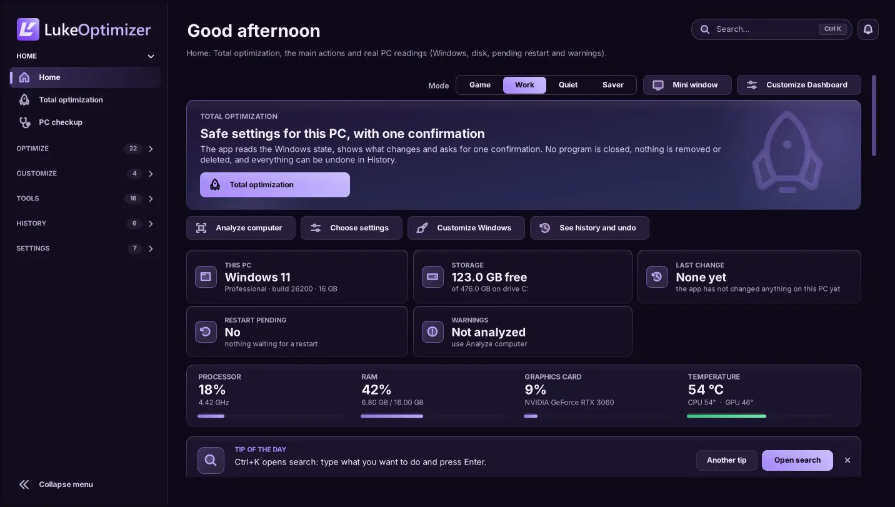

01 / TOTAL OPTIMIZATION
One click.
One confirmation.
Total optimization reads the state of Windows, shows the safe settings still missing, checks each one after applying it and undoes everything in one click.
PERSONALITY. CLARITY. CONTROL.
Get to know every detail of your PC, prepare your games and care for Windows. Free, with no account and no key: download, open, use.
Windows 10 / 11 · 64 bits · Free
INSIDE LUKEOPTIMIZER
Explore the interface, discover the tools and follow each stage. You remain in control.

Home: Total optimization, the main actions and your PC readings.
Demonstration dataVersion 9.0 screens with demonstration data, rendered from the app code outside Windows: on your PC, fonts and details may differ slightly. Features and sensors depend on your computer.
TOOLS WITH A PURPOSE
Readings, diagnostics and settings in one place. Find the right tool for your next step.
Total optimization reads the state of Windows, shows the safe settings still missing, checks each one after applying it and undoes everything in one click.
Game profiles, Windows preparation and metrics to follow your sessions.
CS2: profiles and autoexec, with a backup before changes.
Processor, memory, graphics and available sensors. Your hardware in perspective.
Monitoring illustration. Does not read your computer.Connection diagnostics, ping and DNS comparison. More context to take care of your network.
Review changes and the history of reversible settings. Control also means having a way back.
No specific FPS gain is promised. Measure before and after with the Benchmark. File cleanup cannot be undone.
FROM READINGS TO RESULTS
From the first reading to the final result, follow the process. The app informs; the decision stays yours.
Download freeCheck available information, warnings and what can be reviewed. Analysis does not apply Windows settings.
DESIGNED FOR YOUR SETUP
The app brings the information together. You choose the next step.
TRULY FREE
No sign-up, sign-in, key, payment, trial period or limit. Every feature unlocked and no ads.
Version 9.0.0 for 64-bit Windows 10 and 11.
One .exe file · opens without asking for administrator
Download for WindowsFile SHA256:
The exe does not have a code-signing certificate yet, so Windows may show “Windows protected your PC”. Download it only from this website and, if you like, check the SHA256. Then click More info → Run anyway.
04 / STRAIGHT TO THE POINT
Straight answers about the free LukeOptimizer.
Download freeLukeOptimizer is built for 64-bit Windows 10 and 11. Available features and sensors depend on your hardware, drivers and permissions.
Yes. Since version 9.0, LukeOptimizer is free: no sign-up, sign-in, key, payment, trial period or usage limit. Every feature is unlocked and there are no ads.
No. The app has no account and no sign-in. Your preferences, History and backups stay on your computer.
The file does not have a code-signing certificate yet, and SmartScreen warns like this about programs it does not know yet. Download it only from this website. To check the file, run Get-FileHash in PowerShell with the path of the downloaded exe and compare it with the SHA256 shown under Download. Then click More info → Run anyway.
There is no account, sign-in or telemetry. To know whether there is a new version, the app reads a public, signed notice from this website; you can turn that off in Settings, and updating is never mandatory. Network tests and ping run only when you ask.
Reversible settings can be reviewed in History and undone when conditions allow; Total optimization undoes everything in one click. File cleanup and deletion cannot be undone. Review before applying.
There is no single gain for every computer. Results depend on your hardware, games and Windows state. Use measurements and the Benchmark to compare before and after.
Download 9.0 here and open it: it asks for no key or account and keeps your preferences, History and backups. If 8.x was installed in Program Files, use Settings → Update installation.
LUKEOPTIMIZER 9.0
Free, with no account and no key. Download it, open it and see what can be adjusted on your PC, with undo in History.
Windows 10 and 11 · 64 bits · free